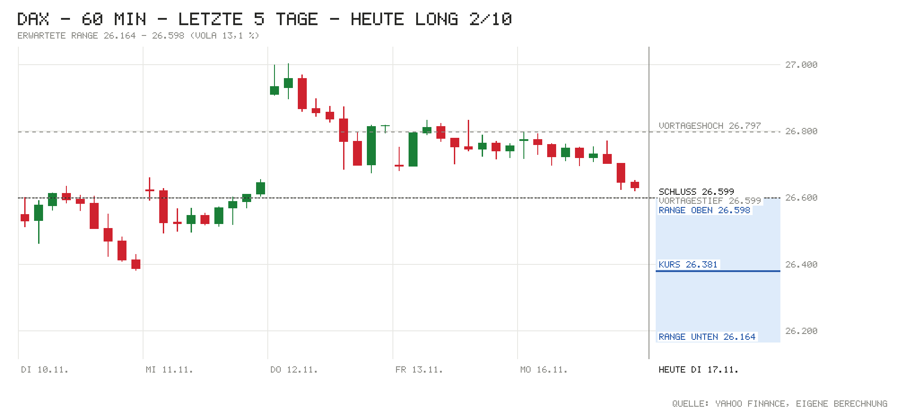

Tagesentscheidung ab 09:05 bis 17:30 Uhr
Der DAX holt mit der Indikation von −0,82 % den Nasdaq-Absturz (−2,67 %) bereits nach; die US-Futures stabilisieren sich (Nasdaq +0,12 %), Renditen und Ölpreis geben nach, und der große Trend ist Bull. Das spricht knapp für eine Erholung vom tiefen Start bis zum Schluss (eigene Einschätzung). Das wichtigste Gegenargument: Das Datenleck bei der Deutschen Bank und die Zurückhaltung vor den Nvidia-Zahlen heute Abend können weitere Verkäufe auslösen. Darum nur 2/10.
- Kurs um 09:05
- 26.381
- Erwartete Range
- 26.164 – 26.598
- Eingepreist (Tagesoption)
- ±0,83 %
Einschätzung vom Kurs um 09:05 (Median der Indikationen L&S, J.P. Morgan, UBS) bis zum Xetra-Schluss. Range = ±1 σ für die restliche Handelszeit aus der DAX-Tagesoption (ca. 68 %). Keine Anlageberatung.
Chart

Signale
| Signal | Wirkung | Stand und Einordnung |
|---|---|---|
| Vorgaben USA | Gegenwind | Montag: S&P 500 −1,92 %, Nasdaq 100 −2,67 %, Dow −1,41 % (Nvidia rund −4 %, Chipindex über −5 %). Futures jetzt: S&P −0,22 %, Nasdaq +0,12 % – der Druck lässt nach. |
| Eröffnung & erste Minuten | Rückenwind | Indikation 26.381 (−0,82 % zum Xetra-Schluss 26.598,64). Der DAX verlor gestern nur 0,57 % – die Lücke holt die US-Verluste nach. Eröffnung und Hoch/Tief zum Abruf noch n/v. |
| Asien & China | Gegenwind | Nikkei −1,34 %, Shanghai −0,50 %, CSI 300 −0,08 %, Hang Seng −0,95 % – Chipwerte unter Druck nach neuen US-Exportregeln. |
| Datenüberraschungen | Neutral | UK heute früh: Arbeitslosenquote 4,6 % vs. Prognose 4,7 %, Löhne ex Bonus 3,5 % wie erwartet. US-PPI (13.11.) leicht unter Prognose. Keine deutsche Veröffentlichung vor 11:00. |
| Zinserwartung | Gegenwind | Fed 09.12.: 101 % für +25 Bp., Januar 71 % für eine weitere Erhöhung. Fed-Chef Warsh skizzierte gestern ein Szenario, in dem ein enttäuschender KI-Boom Aktien und Arbeitsmarkt trifft. EZB-Einlagensatz 2,50 %. |
| Renditen | Rückenwind | Bund 10J 3,36 % (−2 Bp.), US 10J 5,11 % live (−1 Bp.; offiziell +24 Bp. in einer Woche). |
| Kreditstress | Neutral | FRED n/v; Ersatz: HYG −0,27 %, LQD −0,01 % – leichte Schwäche bei Hochzins, kein Stress. |
| Öl & Dollar | Rückenwind | Brent 91,84 USD (−0,65 %); EUR/USD 1,0999 (−0,24 %) unter 1,10 – hilft Exporteuren. |
| Trend | Rückenwind | Über 21-T. (25.963), 50-T. (25.621) und 200-T.-Schnitt (24.983). Großer Trend Bull seit 11.11. – passt zu Long. |
| Positionierung | Neutral | COT 10.11.: Hedgefonds im S&P-Future netto −303.060 (+69.258, Short-Abbau), Asset Manager +914.130. Kein Extrem. |
| Unternehmensnachrichten | Gegenwind | Deutsche Bank nach Datenleck („Inside Deutsche Bank“) vorbörslich rund −3 %; Infineon und Siemens Energy leiden unter der Chip-Schwäche. |
| Profi-Sicht | Neutral | ING: Dollar profitiert als sicherer Hafen, erwartet aber Stabilisierung; Nvidia ist der Test für den KI-Handel. |
| Termine bis 17:30 | Neutral | 11:00 ZEW, 14:30 US-Einzelhandelsumsätze, 15:10 Fed-Waller. Nvidia-Zahlen erst nach US-Schluss – Ereignisrisiko liegt nach 17:30. |
Großer Trend (3-Monats-Momentum)
- Stand
- Bull
- Seit
- 11.11. (6 Wechsel in 3 Monaten)
- Schluss 16.11.
- +1,94 % vs. Zins +0,61 %
- Heute dreht es bei Schluss unter
- 26.141 (jetzt −0,9 %)
Mit dem Kurs von 26.381 bliebe das Signal Bull; die Schwelle liegt aber nur knapp unter der erwarteten Range (26.164) – ein schwacher Tag könnte den Trend erneut drehen. Bull = Rendite der letzten 3 Monate über dem Geldmarktzins, Bear = darunter. Regel: Rendite der letzten 63 Handelstage (≈ 3 Monate) gegen den EZB-Einlagensatz, jeden Tag zum Schluss neu entschieden, Zeitrahmen Tageskerzen (nach Antonacci 2014, dort monatlich über 12 Monate; täglich entschieden dreht es öfter falsch). Keine Anlageberatung.
Bilanz von gestern
16.11.: Short 3/10 – Richtung richtig, +146 Punkte (Kurs zur Notiz 26.745, Schluss 26.599, Hoch 26.797, Tief 26.617). Range ±227 um den Kurs zur Notiz getroffen (Bewegung −146); bisher 78 % von 9 Tagen getroffen (Soll ca. 68 %). Gesamt seit Start: 9 Einschätzungen, Richtung richtig 33 %, Summe −473 Punkte bis Schluss (Schnitt −53).
Marktlage
| Markt | Stand | Veränderung |
|---|---|---|
| DAX (Schluss 16.11.) | 26.598,64 | −0,57 % |
| DAX (Eröffnung heute) | n/v | n/v |
| DAX (jetzt, Kurs zur Notiz 09:05) | 26.381 | −0,82 % |
| S&P 500 (Schluss 16.11.) | 7.416,59 | −1,92 % |
| Nasdaq 100 (Schluss 16.11.) | 27.197,15 | −2,67 % |
| Dow Jones (Schluss 16.11.) | 51.608,17 | −1,41 % |
| US-Futures (S&P / Nasdaq) | 7.422,50 / 27.316,00 | −0,22 % / +0,12 % |
| Nikkei 225 | Eröffnung 59.296 → Schluss 58.860 | −1,34 % |
| Shanghai Composite | Eröffnung 3.586 → Schluss 3.585 | −0,50 % |
| CSI 300 | Eröffnung 3.966 → Schluss 3.976 | −0,08 % |
| Hang Seng | Eröffnung 23.521 → aktuell 23.529 | −0,95 % |
| EUR/USD | 1,0999 | −0,24 % |
| Brent (USD/Barrel) | 91,84 | −0,65 % |
| Gold (USD/Unze) | 3.874,70 | +0,56 % |
| VIX (Schluss 16.11.) | 22,91 | +18,70 % |
China: Festland leichter, belastet von neuen US-Lizenzpflichten für KI-Chips nach Singapur, Malaysia, Indonesien, Thailand und Brasilien (ab 19.11.) und den schwachen Oktober-Daten vom Montag. Farben bei Brent und VIX nach Wirkung auf Aktien. DAX-Eröffnung lag zum Datenabruf (Yahoo, bis 15 min verzögert) noch nicht vor.
Anleihen & Zinsen
| Markt | Stand | Veränderung |
|---|---|---|
| Bund 2J | 3,10 % | −5 Bp. (vs. Bundesbank 16.11.: 3,15 %) |
| Bund 10J | 3,36 % | −2 Bp. (Vortagesschluss 3,38 %) |
| US-Treasury 2J | 4,81 % (live) | −2 Bp. (offiziell 16.11.: 4,83 %) |
| US-Treasury 10J | 5,11 % (live) | −1 Bp.; 1 Woche (offiziell): +24 Bp. |
| Fed, Sitzung 09.12. | Erhöhung um 25 Bp. erwartet | 101 %; Jan. 71 % |
| EZB-Einlagensatz | 2,50 % | zuletzt +25 Bp. (16.09.) |
| Euro-Hochzins-Aufschlag | n/v (FRED) | n/v |
| US-Hochzins (Ersatz: HYG) | 76,73 USD | −0,27 % (Tag) |
Bund 2J: CNBC-Livekurs gegen Bundesbank-Vortageswert, Quellen nicht ganz vergleichbar.
Termine heute
- 08:00 UK: Arbeitslosenquote – Ist 4,6 % vs. Prognose 4,7 % · Löhne ex Bonus Ist 3,5 % vs. Prognose 3,5 % · Claimant Count Ist 33,2K vs. Prognose 25,4K
- 11:00 Deutschland: ZEW-Konjunkturerwartungen – Prognose 28,8 · zuvor 28,1; Lage – Prognose −35,0 · zuvor −35,9; Eurozone ZEW – Prognose 19,1 · zuvor 18,5
- 14:30 USA: Einzelhandelsumsätze – Prognose 0,1 % · zuvor 0,8 %; Kontrollgruppe 0,4 %; Import-/Exportpreise
- 15:10 USA: Fed-Gouverneur Waller spricht
- 15:15 USA: Industrieproduktion – Prognose 0,0 % · zuvor 0,7 %
- 16:00 USA: NAHB-Hausmarktindex – Prognose 29 · zuvor 29
- nach 22:00 Nvidia-Quartalszahlen; 19:30 EZB-Lane, 20:25 Fed-Williams
Nachrichten zu DAX-Werten
- Deutsche Bank: Spiegel, ZDF, NYT und FT werten rund 15 Mio. interne Dokumente aus („Inside Deutsche Bank“: Russlandgeschäfte, Epstein-Verbindungen, Steuermodelle). Die Bank spricht von alten Vorgängen ohne finanzielle Folgen; Aktie vorbörslich rund −3 %, auf Tradegate zeitweise bis −6 %. Einschätzung: negativ für heute, Reputations- und Aufsichtsrisiko schwer bezifferbar.
- Infineon / Siemens Energy: Neue US-Exportregeln für KI-Chips und der Nvidia-Absturz (−4 %) drücken KI-Profiteure. Einschätzung: bleiben bis zu den Nvidia-Zahlen heute Abend belastet.
- Nvidia (Umfeld): Zahlen heute nach US-Schluss, erstmals ohne Jensen Huang an der Spitze. Einschätzung: Zurückhaltung bei SAP, Infineon, Siemens bis zum Abend; nach Xetra-Schluss.
- Adidas: Nike-Investorentag heute; Nike verlor zuletzt Marktanteile an Adidas. Einschätzung: neutral, Impulse erst am Nachmittag.
Profi-Sicht & Positionierung
- ING THINK: Der Dollar zieht trotz Tech-Schwäche als sicherer Hafen an, ING erwartet aber eher Stabilisierung; EUR/USD dürfte um 1,10 halten. Größtes Risiko für den Dollar ist der KI-Handel – weitere Tech-Verluste würden die Fed-Erwartung taubenhafter machen; Nvidia ist der Test (FX Daily).
- Positionierung (COT, Stand 10.11.): Hedgefonds im S&P-Future netto −303.060 (+69.258, deutlicher Short-Abbau), Asset Manager +914.130 (−14.454); Treasuries: Hedgefonds bauen Short weiter aus (−39.017). Kein Extrem.
Quellen
- Marktdaten per Skript: Amber Terminal / Yahoo Finance (Kurse, Futures, HYG/LQD), onvista (Indikationen, VDAX), Eurex (DAX-Tagesoption ODAP), Nasdaq (Kalender), CNBC / Bundesbank / US-Treasury (Renditen), CFTC (COT), ING THINK; FRED (Kreditaufschläge) nicht erreichbar
- onvista/Reuters: Dax dürfte niedriger starten – Nvidia im Blick
- dpa-AFX: Aktien Frankfurt Ausblick – Rückschlag weitet sich aus, Tech-Laune schlecht
- Handelsblatt: Deutsche Bank – Datenleak von Millionen Dokumenten belastet das Institut
- Al Jazeera: US moves to block China’s remote access to AI chips amid Nvidia scandal
- Axios: Fed's Warsh sees risk of stock bust if AI boom disappoints
- MarketScreener: Equities tumble as Nvidia slides, Fed's Warsh discusses AI impact
- ING THINK: FX Daily – Dollar showing resilience to tech stock instability